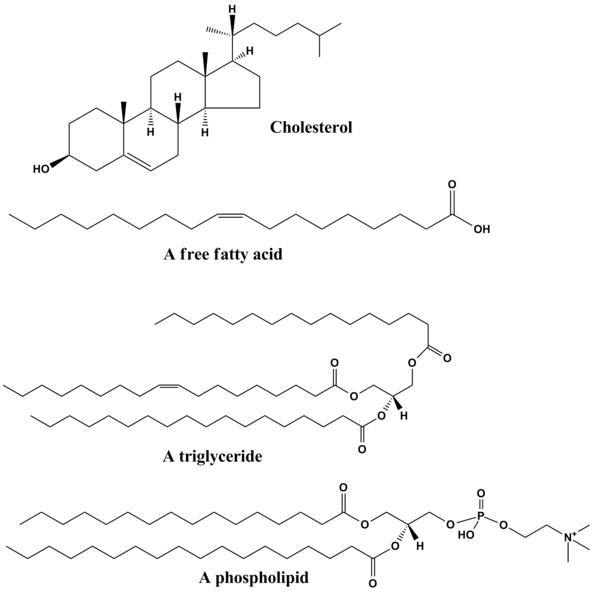

생명의 화학 원소들(Chemical element of life)
탄소, 수소, 질소, 산소, 칼슘, 인의 6가지 원소들은 사람의 세포를 포함한 살아있는 세포 질량의 약 99%를 차지한다. 인체의 대부분을 구성하는 6가지 주요 원소 외에도, 사람은 18가지 이상의 미량 원소들을 필요로 한다.
1)생체분자
생체분자의 4가지 주요 부류는 탄수화물, 지질, 단백질, 핵산이다.
많은 생물학적 분자(생체분자)들은 중합체이다. 단위체는 중합체로 알려진 큰 고분자를 생성하기 위해 서로 연결되어 있는 상대적으로 작은 분자들이다. 단량체가 서로 연결되어 생체고분자를 합성할 때 탈수 반응을 거치게 된다. 서로 다른 고분자들은 더 큰 복합체를 구성할 수 있으며, 이러한 복합체들은 종종 생물활성에 필요하다.
①탄수화물
탄수화물의 주요 기능 중 두 가지는 에너지의 저장과 구조의 형성이다. 당(糖)은 탄수화물이지만, 모든 탄수화물이 당인 것은 아니다. 지구 상에는 다양한 종류의 탄수화물들이 존재한다. 탄수화물은 에너지 저장에 사용될 뿐만 아니라 세포와 세포 사이의 상호작용 및 세포 신호전달에 중요한 역할을 한다.
가장 단순한 형태의 탄수화물은 단당류이며, 대부분 탄소, 수소, 산소가 1:2:1의 비율로(일반적인 화학식은 CnH2nOn,여기서 n은 3이상) 포함되어 있다. 포도당(C6H12O6)은 가장 중요한 탄수화물이다. 과당(C6H12O6)은 과일의 단맛과 관련있는 단당류이며,[35][a] 디옥시리보스(C5H10O4)는 DNA의 구성 성분이다. 단당류는 선형 또는 고리형으로 존재할 수 있다. 선형의 단당류는 카보닐기와 하이드록시기의 반응으로 산소 원자가 고리에 포함된 탄소 고리의 형태를 형성할 수 있다. 고리형 분자는 알도스이면 헤미아세탈, 케토스이면 헤미케탈이다.
두 개의 단당류는 물 분자가 방출되는 탈수 반응을 통해 글리코사이드 결합을 형성하여 이당류를 생성할 수 있다.
몇 개(약 3~6개)의 단당류들이 결합하면, 올리고당("올리고(oligo-)"는 "소수(few)"를 의미)을 형성한다.
수 많은 단당류들이 중합되면 다당류를 형성한다.
②지질
지질은 다양한 종류의 분자들을 포함하고 있으며, 왁스, 지방산, 인지질, 스핑고지질, 당지질 및 테르페노이드(예: 레티노이드와 스테로이드)를 포함한 생물로부터 기원한 비교적 물에 불용성이고, 비극성 화합물들을 포괄하는 화합물들이다. 일부 지질들은 선형의 지방족 화합물이며, 다른 지질들은 고리 구조를 가지고 있다. 일부 지질들은 방향족 화합물(고리형의 평명 구조를 가진)인 반면, 다른 지질들은 그렇지 않다. 어떤 지질들은 유연한 반면, 다른 지질들은 경직된 것도 있다.[40]
지질은 보통 글리세롤 1분자에 다른 분자들이 결합하여 만들어진다. 트라이글리세라이드는 1분자의 글리세롤과 3분자의 지방산의 결합으로 구성되어 있다. 이러한 경우에 지방산은 포화(탄소 사슬에 이중 결합이 없음)되거나 불포화(탄소 사슬에 하나 이상의 이중 결합이 있음)될 수 있다.

③단백질
단백질은 아미노산이라고 불리는 단위체로 만들어진 매우 큰 고분자 중합체이다. 아미노산은 알파(α) 탄소라고 불리는 키랄 탄소에 아미노기(–NH2), 카복시기(–COOH), 수소 원자(–H), 곁사슬(R기, –R)이 결합되어 있는 화합물이다. 아미노기와 카복시기는 생리적인 조건 하에서는 –NH3+ 와 –COO− 로 존재한다. 곁사슬(R기)는 각각의 아미노산의 종류마다 다르며, R기의 특성은 단백질의 전체적인 3차원 구조에 큰 영향을 미친다. 어떤 아미노산은 그 자체로 또는 변형된 형태로 기능을 가지고 있다.
단백질의 구조는 전통적으로 4가지 단계의 계층 구조로 설명된다. 단백질의 1차 구조는 아미노산의 선형적인 배열 순서로 결정된다.
2차 구조는 국지적인 형태와 관련이 있다. 아미노산들의 일부 조합은 α-나선이라고 불리는 코일 형태 또는 β-시트라고 불리는 시트 형태를 형성한다.
3차 구조는 아미노산 작용기끼리의 결합 및 상호작용에 의해 폴리펩타이드를 형성한다.
마지막으로 4차 구조는 4개의 소단위체를 가지고 있는 헤모글로빈과 같이 여러 개의 폴리펩타이드 소단위체를 가지고 있는 단백질의 구조와 관련이 있다.
④핵산
핵산은 세포핵에서 주로 발견되는 생명활동에 필수적인 생체고분자이다. 핵산은 모든 살아있는 세포와 바이러스에서 유전 정보를 전달할 수 있는 복잡한 고분자량의 생화학적 거대 분자이다.[2] 핵산은 뉴클레오타이드를 단위체로 하는 중합체이다. 뉴클레오타이드는 핵염기(퓨린 계열 염기 또는 피리미딘 계열 염기), 5탄당, 인산의 세 가지 성분으로 구성된다.
가장 일반적인 핵산은 디옥시리보핵산(DNA)과 리보핵산(RNA)이다.[50] 각 뉴클레오타이드의 당과 인산은 서로 결합하여 핵산의 골격을 형성하고, 핵염기의 서열은 정보를 저장한다. 가장 일반적인 핵염기는 아데닌, 사이토신, 구아닌, 티민, 유라실이다. 핵산의 각 가닥의 핵염기들 사이에서 상보적인 염기쌍이 형성된다. 아데닌은 티민, 유라실과 수소 결합을 형성하고, 구아닌은 사이토신과 수소 결합을 형성한다.

DNA와 RNA에서 발견되는 핵염기는 서로 다른데, 아데닌, 사이토신, 구아닌은 DNA와 RNA에서 모두 발견되는 반면, 티민은 DNA에서만 발견되고, 유라실은 RNA에서만 발견된다.